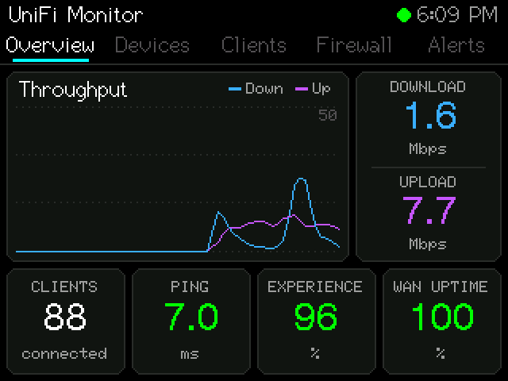
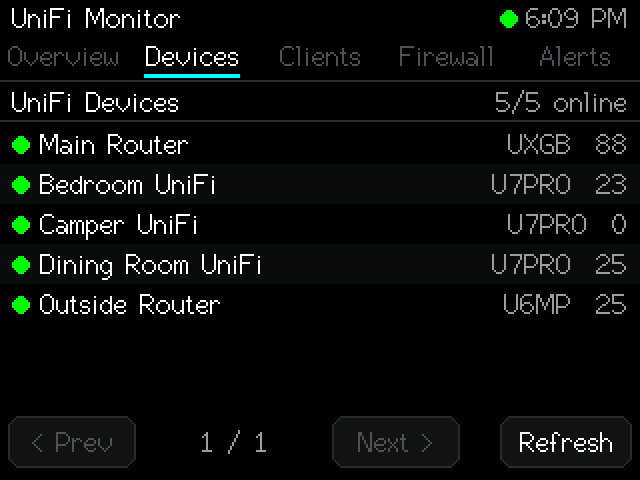
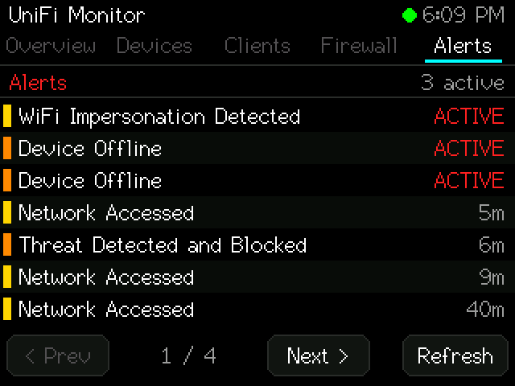

CYD UniFi Monitor
A live dashboard for your UniFi network on a ~$15 ESP32 “Cheap Yellow Display”: throughput, ping, clients, devices, firewall stats and alerts.



Install
1
Pick your board. Not sure? Check the model printed on the back of the board.
Loading boards…
2
Plug it in with a USB data cable, then click Install.
Your browser can't flash devices. Use desktop Chrome or Edge.
The installer needs a secure (https) page.
Choose the serial port that appears when you plug the board in. If nothing shows up, try another cable (many are charge-only) or install the CH340 USB driver. If flashing won't start, hold the BOOT button on the board while clicking Install.
3
Set it up from your phone. After flashing, the screen shows a WiFi network named
UniFi-Monitor-XXXX. Join it and a setup page opens (or browse to http://192.168.4.1).
Enter your 2.4 GHz WiFi and your UniFi console's IP address, plus a local-only admin account
(UniFi → Settings → Admins & Users → Add Admin → “Restrict to local access only”).
To change settings later, hold the screen while it starts up.
Requirements
A UniFi OS console on your network (UDM, UDM Pro/SE, Cloud Gateway, Cloud Key Gen2, UXG with a console), and one of the boards above. Boards marked untested are built from their published pinouts — if one works (or doesn't) for you, please open an issue.